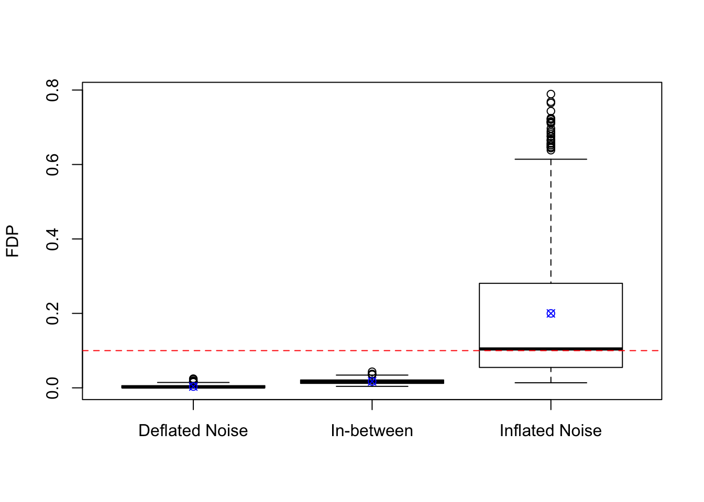

BHq (1995) Simulation with Correlation
Lei Sun
2018-05-11
Last updated: 2018-05-11
workflowr checks: (Click a bullet for more information)-
✔ R Markdown file: up-to-date
Great! Since the R Markdown file has been committed to the Git repository, you know the exact version of the code that produced these results.
-
✔ Environment: empty
Great job! The global environment was empty. Objects defined in the global environment can affect the analysis in your R Markdown file in unknown ways. For reproduciblity it’s best to always run the code in an empty environment.
-
✔ Seed:
set.seed(20180511)The command
set.seed(20180511)was run prior to running the code in the R Markdown file. Setting a seed ensures that any results that rely on randomness, e.g. subsampling or permutations, are reproducible. -
✔ Session information: recorded
Great job! Recording the operating system, R version, and package versions is critical for reproducibility.
-
Great! You are using Git for version control. Tracking code development and connecting the code version to the results is critical for reproducibility. The version displayed above was the version of the Git repository at the time these results were generated.✔ Repository version: 0ae3b46
Note that you need to be careful to ensure that all relevant files for the analysis have been committed to Git prior to generating the results (you can usewflow_publishorwflow_git_commit). workflowr only checks the R Markdown file, but you know if there are other scripts or data files that it depends on. Below is the status of the Git repository when the results were generated:
Note that any generated files, e.g. HTML, png, CSS, etc., are not included in this status report because it is ok for generated content to have uncommitted changes.Ignored files: Ignored: .DS_Store Ignored: .Rproj.user/ Ignored: analysis/benjamini_simulation_cache/ Ignored: docs/figure/
Expand here to see past versions:
| File | Version | Author | Date | Message |
|---|---|---|---|---|
| rmd | 0ae3b46 | Lei Sun | 2018-05-11 | wflow_publish(c(“analysis/about.Rmd”, |
Inflation, deflation, and in-between
Simulated in this way, all elements in one \(Z\) are marginally \(N\left(0, 1\right)\) (hence they are null \(z\)-scores), and highly correlated.
- In addition, even with exactly the same \(\Sigma\), the empirical distribution of each realizations \(z = \left[z_1, z_2, \ldots, z_n\right]\) of \(Z\) can be inflated, deflated, or in-between, defined in the following way. Let \(\text{sd}\) be the sample standard deviation of \(z\).
- Inflated Noise: \(\text{sd}(z) > 1.05\)
- Deflated Noise: \(\text{sd}(z) < 0.95\)
- In-between: \(0.95 \le \text{sd}(z) \le 1.05\) The cutoffs are thus chosen so as to when \(z\) are \(n\) iid \(N(0, 1)\) samples, it would be highly unlikely to have \(\text{sd}(z)\) falling into the inflated or deflated categories.
Categorize our \(m\) realizations of \(Z\) into the three groups mentioned above.
## Categorize m realizations into three groups
sd.Z <- apply(Z, 2, sd)
group <- cut(sd.Z, breaks = c(0, 0.95, 1.05, Inf), labels = c("Deflated Noise", "In-between", "Inflated Noise"))
table(group)group
Deflated Noise In-between Inflated Noise
498 166 336 - Examples: the blue line is the density curve of \(N(0, 1)\).

Add signals and obtain \(p\)-values for every simulation trial.
- In each of our simulation trial, the signals are simulated as \(\theta_j \overset{iid}{\sim} 0.9\delta_0 + 0.1N(0, 4^2)\), \(j = 1, \ldots, n\).
theta <- replicate(m, sample(c(rep(0, n * 0.9), rnorm(n * 0.1, 0, 4))))- Observations \(X_j = \theta_j + Z_j\).
X <- theta + Z- \(z\)-scores \(= X_j / 1 = X_j\), two-sided \(p\)-values \(= 2\Phi\left(-\left|X_j\right|\right)\).
p <- 2 * pnorm(-abs(X))Apply \(\text{BH}_q\) and form a rejection set at the nominal FDR \(= 0.1\) for each trial.
q <- 0.1
p.BH <- apply(p, 2, p.adjust, method = "BH")
BH.rej <- apply(p.BH, 2, function(x){x <= q})Calculate FDP for each trial
FDP.fun <- function (rej.id, theta) {
sum(theta[rej.id] == 0) / max(1, length(theta[rej.id]))
}
FDP <- sapply(seq(m), function(i){FDP.fun(BH.rej[, i], theta[, i])})Average FDP for each group and overall
## Boxplot of FDP for each group
boxplot(FDP ~ group, ylab = "FDP")
abline(h = q, lty = 2, col = "red")
points(1 : 3, tapply(FDP, group, mean), col = "blue", pch = 13)
## Mean of FDP for each group
tapply(FDP, group, mean)Deflated Noise In-between Inflated Noise
0.003543453 0.017217872 0.199939979 ## sd of FDP for each group
tapply(FDP, group, sd)Deflated Noise In-between Inflated Noise
0.003874200 0.007387998 0.204237518 ## 95% CI of the mean of FDP for each group
tapply(FDP, group, function(x){t.test(x)$conf.int})$`Deflated Noise`
[1] 0.003202359 0.003884548
attr(,"conf.level")
[1] 0.95
$`In-between`
[1] 0.01608569 0.01835006
attr(,"conf.level")
[1] 0.95
$`Inflated Noise`
[1] 0.1780227 0.2218572
attr(,"conf.level")
[1] 0.95## 95% CI of the mean of FDP overall
t.test(FDP)$conf.int[1] 0.06252667 0.08107861
attr(,"conf.level")
[1] 0.95Observations
“Inflated Noise” is a particularly hostile group for \(\text{BH}_q\), and indeed it’s hostile for all multiple testing procedures which ignore the correlation.
- That said, \(\text{BH}_q\) are still, maybe surprisingly so to many, quite robust to correlation in two senses.
- First, with a given \(\Sigma\) containing substantial off-diagonal correlations, \(\text{BH}_q\) manages to control FDR on average, over all inflated, deflated, and in-between put together.
- Second, even for the particularly hostile “Inflated Noise” group, \(\text{BH}_q\) gives an average FDP \(=\) 0.2 at a nominal FDR \(= 0.1\), which is quite impressive, much better than other methods like
qvalue.
The most relevant issue for \(\text{BH}_q\) on correlated data is not controlling the mean of FDP, but rather the variability of FDP for different data sets. Like many methods ignoring correlation, \(\text{BH}_q\) is too conservative when the noise is deflated, and too anti-conservative when the noise is inflated. However, in practice we would prefer a robust procedure that gives a rejection set with an FDP close to the desired nominal FDR, conditioned on every given data set. This is what we want to achieve with
CASH.The surprising relative robustness of \(\text{BH}_q\) might be theoretically explained by the Gaussian derivatives theory on correlation we used in
CASH, which I’d like to explore further.
Session information
sessionInfo()R version 3.4.3 (2017-11-30)
Platform: x86_64-apple-darwin15.6.0 (64-bit)
Running under: macOS High Sierra 10.13.4
Matrix products: default
BLAS: /Library/Frameworks/R.framework/Versions/3.4/Resources/lib/libRblas.0.dylib
LAPACK: /Library/Frameworks/R.framework/Versions/3.4/Resources/lib/libRlapack.dylib
locale:
[1] en_US.UTF-8/en_US.UTF-8/en_US.UTF-8/C/en_US.UTF-8/en_US.UTF-8
attached base packages:
[1] stats graphics grDevices utils datasets methods base
other attached packages:
[1] ggplot2_2.2.1
loaded via a namespace (and not attached):
[1] Rcpp_0.12.16 knitr_1.20 whisker_0.3-2
[4] magrittr_1.5 workflowr_1.0.1 munsell_0.4.3
[7] colorspace_1.3-2 rlang_0.1.6 stringr_1.3.0
[10] plyr_1.8.4 tools_3.4.3 grid_3.4.3
[13] gtable_0.2.0 R.oo_1.21.0 git2r_0.21.0
[16] htmltools_0.3.6 yaml_2.1.18 lazyeval_0.2.1
[19] rprojroot_1.3-2 digest_0.6.15 tibble_1.4.2
[22] R.utils_2.6.0 evaluate_0.10.1 rmarkdown_1.9
[25] labeling_0.3 stringi_1.1.6 pillar_1.1.0
[28] compiler_3.4.3 scales_0.5.0 backports_1.1.2
[31] R.methodsS3_1.7.1This reproducible R Markdown analysis was created with workflowr 1.0.1